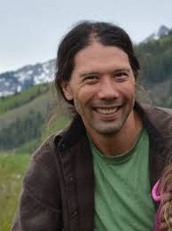

Leadership
HerbVar was founded by the Wetzel Lab at Michigan State University and is led by a Planning Group and multiple Subgroups that focus on specific topics. Please feel free to get in touch with members of the planning if you are interested in the project.
HerbVar Planning Group

Dr. Will Wetzel
Department of Entomology
Ecology, Evolutionary Biology, & Behavior Program
Michigan State University
wcwetzel (a) msu.edu • website

Dr. Moria Robinson
Department of Entomology
Ecology, Evolutionary Biology, & Behavior Program
Michigan State University
robi1169 (a) msu.edu • website

Dr. Lee Dyer
Department of Biology
Ecology, Evolution and Conservation Program
Univesity of Nevada, Reno
ldyer (a) unr.edu • website

Dr. Phil Hahn
Department of Entomology & Nematology
University of Florida
phil.hahn (a) mso.umt.edu • website

Dr. Brian Inouye
Department of Biological Science
Florida State University
bdinouye (a) bio.fsu.edu • website

Dr. Nora Underwood
Department of Biological Science
Florida State University
nunderwood (a) bio.fsu.edu • website

Dr. Susan Whitehead
Department of Biological Sciences
Virginia Tech
swhitehead (a) vt.edu • website
HerbVar Coordination Staff
Dr. Will Wetzel, lead PI
Department of Entomology
Ecology, Evolutionary Biology, & Behavior Program
Michigan State University
wcwetzel (a) msu.edu
Dr. Moria Robinson, Postdoc coordinator
Department of Entomology
Ecology, Evolutionary Biology, & Behavior Program
Michigan State University
robi1169 (a) msu.edu
Luke Zehr, Research scientist
Department of Entomology
Michigan State University
zehrluke (a) msu.edu
Damage Estimation Subgroup
Dr. Bastien Castagneyrol
BIOGECO, INRA
University of Bordeaux
Julie Davis
Department of Entomology
Cornell University
Zoe Getman-Pickering
Department of Entomology
Cornell University
Dr. Ian Pearse
Fort Collins Science Center
US Geological Survey
Dr. Will Wetzel
Department of Entomology
Ecology, Evolutionary Biology, & Behavior Program
Michigan State University
Reproductive Damage Subgroup
Dr. Phil Hahn
Department of Entomology & Nematology
University of Florida
Dr. Paul Ode
Bioagricultural Sciences & Pest Management
Colorado State University
Dr. Susan Whitehead
Department of Biological Sciences
Virginia Tech
Insect Sampling Subgroup
Dr. Tania Kim
Department of Entomology
Kansas State University
Dr. Nick Pardikes
Institute of Entomology
Czech Academy of Sciences
Dr. Moria Robinson
Department of Entomology
Michigan State University
Luke Zehr
Department of Entomology
Michigan State University
Rare Plants Subgroup
Dr. Lee Dyer
Department of Biology
Ecology, Evolution and Conservation Program
Univesity of Nevada, Reno
Danielle Salcido
Department of Biology
Ecology, Evolution and Conservation Program
Univesity of Nevada, Reno
Predictors of Variability Subgroup
Dr. Paul Ode
Bioagricultural Sciences & Pest Management
Colorado State University
Dr. Ian Pearse
Fort Conllins Science Center
US Geological Survey
Succulent Subgroup
Dr. Judie Bronstein
Ecology and Evolutionary Biology
University of Arizona
Victoria Luizzi
Ecology and Evolutionary Biology
University of Arizona
Tree Subgroup
Dr. Bastien Castagneyrol
BIOGECO, INRA
University of Bordeaux
Dr. Amy Trowbridge
Department of Entomology
University of Wisconsin, Madison